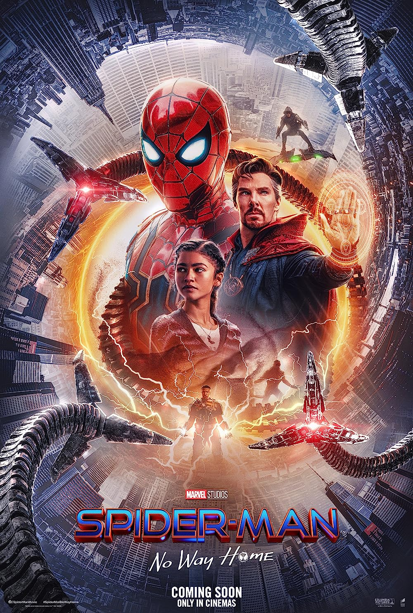

5 Things About Me
5 Favourite Films
- Spider-man 
- Iron-man

- Your name

- Blade runner

- Dune
5 Facts About Me
- I have a passion for learning: I love acquiring new knowledge and exploring various topics to expand my understanding of
the world.
- I enjoy outdoor activities: Spending time in nature, whether it's hiking, cycling, or just taking a leisurely walk, is
one of my favorite ways to unwind and stay active.
- Music is a big part of my life: I have a deep appreciation for music and enjoy both listening to it and playing musical
instruments. It's a source of inspiration and relaxation for me.
- I value my relationships: Building and maintaining meaningful connections with family and friends is incredibly
important to me. I cherish the moments I spend with loved ones.
- I have a strong sense of curiosity: I'm naturally curious and always eager to explore new ideas, places, and
experiences. This sense of curiosity keeps life interesting and full of surprises.